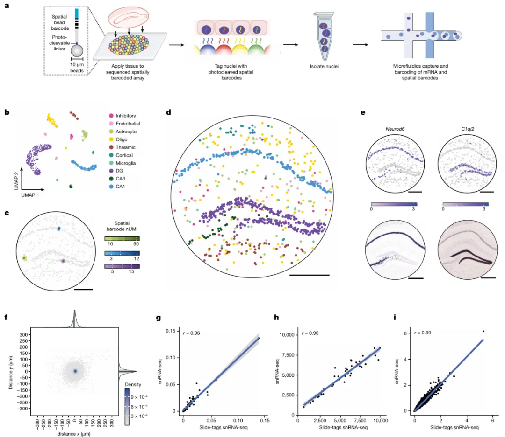
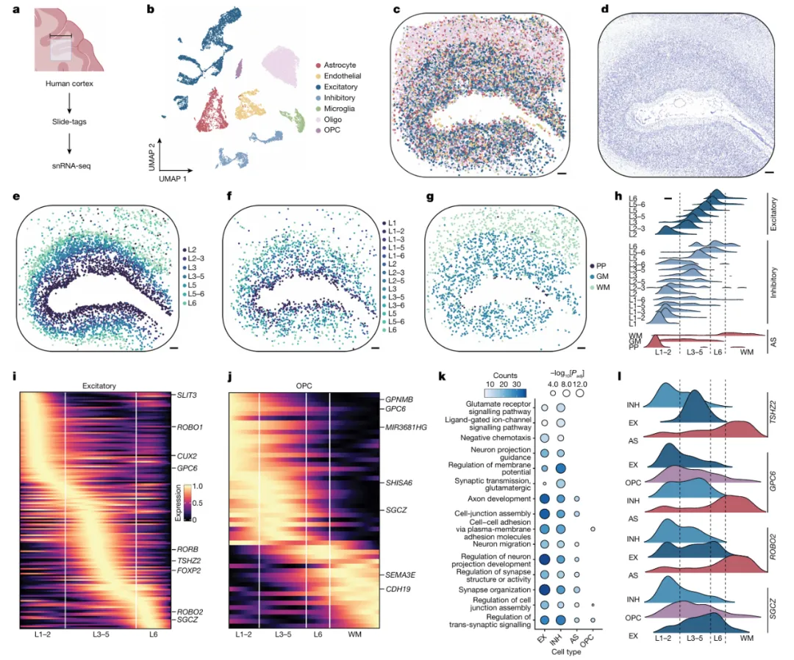
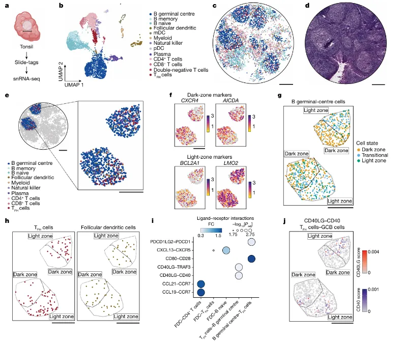
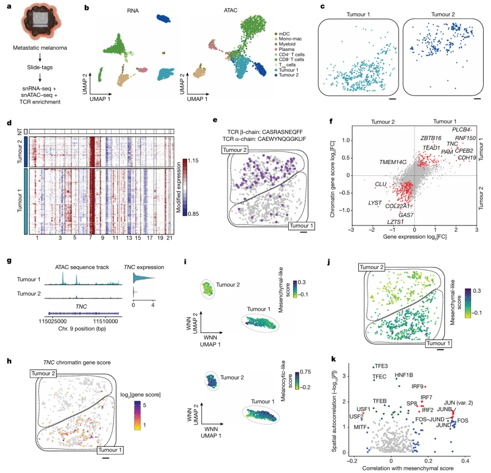

《Nature》：Slide-tags实现多模态空间基因组学的单核条形码
原文：https://mp.weixin.qq.com/s?__biz=MzAwMzIzOTk5OQ==&mid=2247527592&idx=1&sn=daa61a9f08f948e1b03d776395e42773&chksm=9b3c15f8ac4b9ceec4fe046dab278a7095853734a4b541eb6be1bf57560c25fc06f99f4db72b#rd 合集：空间转录组 / 文献速递
一、写在前面
本次分享的是2023年12月发布于《Nature》的文章**(IF ：50.5)， 感兴趣的同学可以看看原文：A. J. C. Russell, J. A. Weir, N. M. Nadaf, et al., "Slide-tags enables single-nucleus barcoding for multimodal spatial genomics," Nature, vol. 625, pp. 101–109, 2023, doi: 10.1038/s41586-023-06837-4. 基因组学的技术发展使得单个细胞内基因表达** 和表观遗传调控 的高通量测序成为可能，然而，结果中缺少了被分析细胞的空间架构组织信息。空间分辨测序技术旨在通过使用已知空间位置的寡核苷酸对大分子进行条形码标记来解决这一缺点，因此需要在空间环境中重新发明方法对每个分子进行标记并测定。 在这篇文章中作者开发了一种创新的空间基因组学方法 Slide-tags，它通过将单个细胞核与具有已知位置的空间条形码寡核苷酸 “标记”起来，从而实现对组织切片中细胞的高效捕获和微米级分辨率的细胞位置解析，并且能够广泛应用于任何单细胞方法。 空转分析教程可见：空间转录组学习手册合辑 一文搞定空间转录组与单细胞测序的整合分析CellChat空转细胞通讯合辑
二、主要结果
1.使用空间条形码对细胞核进行标记。****
Slide-tags 方法使用作者先前开发的密集排列的10 μm DNA条码磁珠，经Split-pool phosphoramidite生成，包括空间条形码位置信息以及光切割连接器，可以通过光切割空间条形码对细胞核进行标记，从而可以捕捉和标记mRNA的空间信息（Fig.1a）。在此基础上，作者在小鼠海马体上进行了基于液滴的单核 RNA测序（snRNA-seq），成功从3mm2的冠状组织切片中分离并测序了1,661个细胞核，并使用标准的单细胞分析流程进行数据聚类，同时经已建立的细胞类别标记对聚类进行注释（Fig.1b）。结果显示每个细胞核可以检测到多个空间条形码（Fig.1c），之后，作者通过基于密度的聚类算法 DBSCAN分离背景空间条形码与真实信号，并使用UMI加权的质心来确定单个细胞的空间坐标。结果表明，各个聚类的空间位置重现了海马体预期的细胞架构排列（Fig.1d），且基因的空间表达谱与现有的原位杂交数据相匹配（Fig.1e）。之后，为探究Slide-tags标记程序是否会影响随后进行的单核RNA测序（snRNA-seq）的数据质量。作者对小鼠海马体相邻切片进行了Slide-tags处理后，紧接着进行了snRNA-seq，并与未标记的切片进行了比较。结果显示，细胞类型比例，细胞的UMIs，基因表达以及和bulk-RNA-seq的相关性都没有受到影响(Fig. 1g–i)。
Fig.1

2.在人类大脑皮层中应用 Slide-tags的snRNA-seq。****
人类大脑皮层具有很好表征的细胞结构，其中特定的神经元亚群排列在离散层中。 作者推测Slide-tags可以用于人类大脑组织的简便分析，尤其是探究细胞类型特异性的空间基因表达模式。因此作者对一位78 岁神经典型供体的前额叶皮层的100*******区域进行了 Slide-ta分析**，结果显示了17,441个高质量的空间映射细胞核，每个细胞核的中位数UMIs为3,196(Fig. 2a)。聚类分析揭示了预期的神经元和胶质细胞类型，重现了已知的层分布和空间结构(Fig. 2b-d)。数据集共包括91种神经元亚型的层注释，恢复了各亚型的预期空间分布(Fig. 2e-f)。分析结果显示星形胶质细胞可以被聚类为两个不同的群体，它们在白质和灰质区域之间空间分隔，且能够被准确定位（Fig. 2g-h），除此之外，作者还在每个细胞类型中识别了空间变化的基因，这可能揭示了以前未知的空间基因表达模式（Fig. 2i-j）。通过对空间变化基因进行基因本体（Gene Ontology）分析，发现它们与细胞-细胞粘附、细胞连接组装和轴突发育等生物学过程有关（Fig. 2k-l）。
Fig.2

3.在人类扁桃体中应用 Slide-tags的snRNA-seq。****
空间基因组学技术面临的一个主要挑战是正确分割密集堆积的组织，尤其是那些免疫起源的组织，为探究 Slide-tags在此基础上的应用，作者对人类扁桃体 进行了基于Slide-tags 的snRNA-seq分析。从7 mm2的组织中分离出81,000个细胞核，并测序了其中的8,747个，空间映射了5,778个高质量的snRNA-seq图谱，每个细胞核的中位数UMIs为2,377。这些聚类的空间位置揭示了预期的组织空间结构，包括B细胞和T细胞区域，以及由生发中心B（GCB）细胞、T辅助滤泡细胞和滤泡树突状细胞组成的生发中心（Fig. 3a-d）。由于GCB细胞在基因表达空间上的变化较低，需要对许多细胞进行采样，然而，结果显示反应性生发中心在空间上被极化为光区和暗区，因此作者推断可以结合空间和单细胞数据来对 GCB细胞进行分类。 结果显示作者通过空间排列测试计算的GCB细胞内的空间变化基因，并识别出了光区和暗区GCB细胞的关键标记基因（Fig. 3e-h）。这种分类有助于更细致地区分GCB细胞的不同功能状态，并且能够揭示它们在生发中心内部的空间组织。与此同时，作者利用LIANA 探究了受体-配体相互作用，还发现了特定的相互作用，例如GCB细胞上的CD40受体与TFH细胞上的CD40LG配体之间的相互作用在光区高度富集，而单独的CD40受体表达则轻微倾向于暗区（Fig. 3i-j）。
Fig.3

4.在人类黑色素瘤中应用 Slide-tags的多组学分析。****
癌症中的表观遗传失调会促进药物抗性和促转移的细胞状态转变。同时进行肿瘤微环境的基因组、转录组和表观基因组的空间映射，可以为理解肿瘤进化的复杂机制提供 参考。因此作者选择黑色素瘤进行了基于Slide-tags的snATAC-seq和snRNA-seq。 空间映射了38.3 mm2区域的2,529个细胞核（Fig.4a-b），通过对snRNA-seq和多组学数据的无监督聚类分析，作者识别出了免疫细胞、基质细胞和肿瘤细胞类型；肿瘤细胞被分为两个亚群，分别称为肿瘤簇1和肿瘤簇2（Fig.4c）。由于CNV 在黑色素瘤肿瘤演变中起重要作用，因此作者使用了RNA-seq CNV 推断工具，结果显示出了与肿瘤簇1和2之间的空间和转录组一致的基因组差异（Fig.4d）。之后，为探究不同区域的异质性 T 细胞反应，作者对于TCR序列进行分析，结果发现TCRβ克隆型在肿瘤区域2中的扩张显著高于肿瘤区域1（Fig.4e）。为进一步研究染色质可及性和转录如何影响肿瘤细胞状态以及这与肿瘤微环境的关系，作者比较了肿瘤亚群之间的差异基因表达和差异染色质基因得分 ，结果显示肿瘤簇1与肿瘤簇2相比，TNC和其他间充质样细胞状态标记物的表达和染色质可及性得分都有所不同（Fig.4g-h）。最后作者利用scATAC-seq 识别了可能参与间充质样转变的空间自相关的转录因子基序（Fig.4i-k）。
Fig.4

三、最后聊聊
总而言之，这篇文章作者开发了Slide-tags技术 ，它可以应用于不同规模、不同物种和不同疾病状态下的组织。具有广泛的适用性，高分辨率，高通量和整合单细胞和空间数据等特点。 通过在已知基因表达的基础上加入空间信息，能够揭示细胞的空间异质性，对研究组织结构和功能具有重要意义。
四、学习手册
对空间转录组、scRNA-seq分析及联合分析感兴趣的同学可参考： 空间转录组学习手册合辑 scRNA-Seq学习手册Seurat V5更新版 一文搞定空间转录组与单细胞测序的整合分析CellChat空转细胞通讯合辑

如何联系我们

 公众号后台消息回复不便，这里给大家留一下领取资料及免费服务器(足够支持你完成硕博生涯的生信环境)的微信号 ，方便各位随时交流（别问在么，添加时直接说来意）。呼声很高的交流群 也建好了，欢迎大家入群讨论：
公众号后台消息回复不便，这里给大家留一下领取资料及免费服务器(足够支持你完成硕博生涯的生信环境)的微信号 ，方便各位随时交流（别问在么，添加时直接说来意）。呼声很高的交流群 也建好了，欢迎大家入群讨论：
大家可以阅读完这几篇之后添加给生信入门初学者的小贴士 如何搜索公众号过往发布内容
已有生信基地联系方式的同学无需重复添加

 您点的每个赞和在看，我都认真当成了喜欢
您点的每个赞和在看，我都认真当成了喜欢